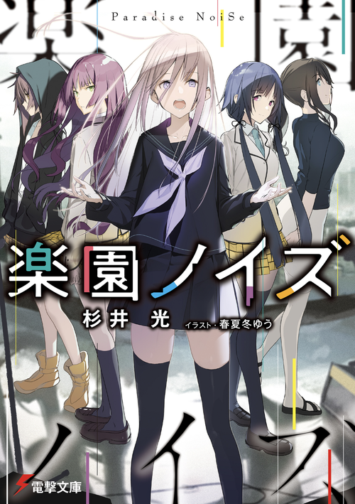

Paradise Noise
Novel Info's
Status: Ongoing
Genre: Comedy, Drama, Harem, Romance, Slice of Life
Author: Hikaru Sugii
Illustrator: Yuu Akinashi
Volumes: 6
Original Publisher: Dengeki Bunko, Kadokawa
English Publisher: N/A
Fan Translation: Headcanon TL
Description/Sypnosis
I can still feel the sound of the music that played in that place, on that day.
On a whim, I uploaded a music video where I wore women’s clothes, but I unexpectedly became famous as a mysterious, high school girl net-musician (despite being a guy). I didn’t think I would be found out since my face wasn’t shown, but my high school music teacher – Hanazono Misao – discovered my secret and used that information to blackmail me.
And then, thanks to the three girls I met through Hanazono-sensei – the mad genius pianist Rinko, the flower-arranging princess drummer Shizuki, and the truant zashiki-warashi vocalist Akane – my bland and quiet grey high school life became full of colorful noise and trouble.
A boy-meets-girls story, filled with love, youth, and band!
Download Links
Epub & Pdf